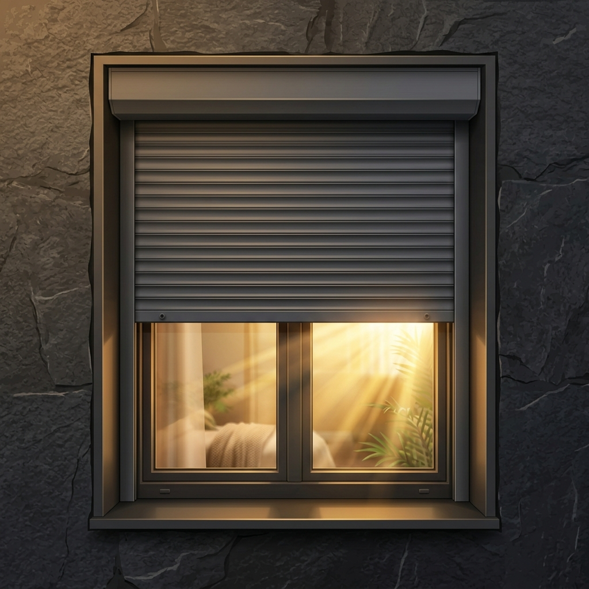

Instalación de Persianas
Fabricación e instalación a medida de persianas de aluminio térmico y PVC para tu hogar en Málaga. Máxima eficiencia para aislar del frío, del ruido y del calor de Málaga.

Fabricación e Instalación de Persianas de Aluminio y PVC
Mejora el aislamiento y el valor de tu vivienda. En Persianas Zambrana fabricamos e instalamos persianas a medida adaptadas a cualquier tipo de ventana, utilizando materiales con la máxima certificación energética:
Sistema Monoblock / Compacto
La persiana se integra sobre la ventana con un cajón de PVC altamente aislado, ideal para reformas integrales o viviendas nuevas.
Sistema Mini / Exterior
Instalación de la persiana sin necesidad de hacer obras en la pared. El cajón se coloca en el exterior de la fachada o en el hueco.
Aluminio térmico inyectado
Nuestras persianas de aluminio están rellenas de poliuretano expandido, aislando tu hogar del intenso calor de Málaga.
Recomendación de Seguridad
Especificaciones del Servicio
 Hueco de ventana sin persiana
Hueco de ventana sin persiana
 Persiana de aluminio colocada
Persiana de aluminio colocada
| Precio medio | Desde 95€ (Según medidas) |
| Tiempo de trabajo | 1 - 3 horas por ventana |
| Garantía técnica | 3 años de garantía total |
| Materiales habituales | Cajón aislado, lamas de aluminio, guías |
| Disponibilidad | Presupuesto y medición gratis |
Proceso de Instalación Profesional
Cómo trabajamos para solucionar tu problema en 4 sencillos pasos
Medición técnica
Visitamos tu domicilio para medir los huecos con precisión y asesorarte sobre el mejor sistema de cajón y lamas.
Presupuesto cerrado
Te preparamos una oferta cerrada por escrito detallando materiales, acabados y precio final de mano de obra.
Fabricación a medida
Cortamos los perfiles de aluminio y montamos el paño y el cajón compacto en nuestro taller local.
Instalación y ajuste
Fijamos las guías laterales, instalamos el cajón exterior o interior, pasamos la cinta o motor y sellamos los bordes.
Preguntas Frecuentes
Resolvemos tus dudas principales sobre este servicio
¿Se puede poner una persiana en una ventana que no tiene cajón de obra?
Sí, para estos casos el Sistema Mini (también conocido como persiana exterior) es perfecto. El cajón de aluminio perfilado se instala en la fachada exterior, sin tocar la pared interna de la habitación y sin hacer ninguna obra sucia.
¿De qué material es mejor poner el cajón de la persiana?
Recomendamos cajones compactos de PVC con doble tabique y aislante de poliestireno en su interior, ya que evitan que el frío y el ruido exterior entren en la vivienda a través del registro de la persiana.
¿Cuánto tiempo tardáis en fabricar e instalar mis persianas?
El plazo medio de fabricación para medidas estándar es de 3 a 5 días laborables. Una vez fabricadas, el montaje en tu vivienda se realiza en el mismo día.
¿Necesitas persianas nuevas?
Llámanos al 661 50 75 18 para agendar una visita técnica para medir y darte presupuesto sin compromiso o contáctanos por WhatsApp.